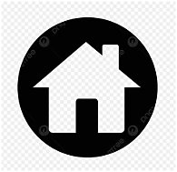
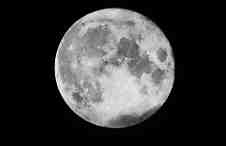
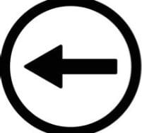
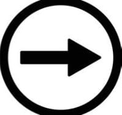

Sabías que la luna siempre nos muestra la misma cara?

La Luna sí gira, pero lo hace de una forma especial. Tarda exactamente lo mismo en girar sobre sí misma que en dar una vuelta completa alrededor de la Tierra: unos 27 días. A eso se le llama acoplamiento de marea o rotación sincrónica.La gravedad de la Tierra fue frenando a la Luna hace millones de años hasta dejarla amarrada. Es como si estuvieras caminando alrededor de alguien sin dejar de mirarlo a los ojos, tienes que ir girando tú también.Por eso siempre vemos los mismos cráteres y manchas. La cara que nunca vemos desde la Tierra se llama cara oculta, y no es oscura, también le da el Sol. La primera vez que la vimos fue en 1959 con la sonda soviética Luna 3. Ideal para tu página: pon una animación de una persona girando alrededor de otra.
pagina1

